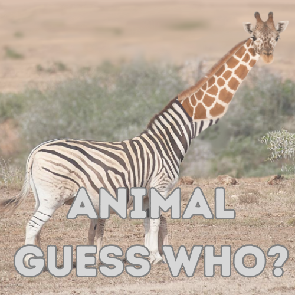

Ang mga laro na naithala
Ang Paglalakbay sa Filipino 7
Samahan si Juan at lakbayin ang isang museo tungkol sa mga pinag-aralan noong baitang 7 ka pa lamang.
Kumuha ng pagsusulit upang masuri ang iyong katalinuhan sa paksang tinalakay sa Filipino.

Guess Who: Animal Edition
Pagalingan sa paghula kung ano ang animal na ito!
Pag-isipang mabuti ang iyong pagsagot, baka iba ang iyong makita. 👀